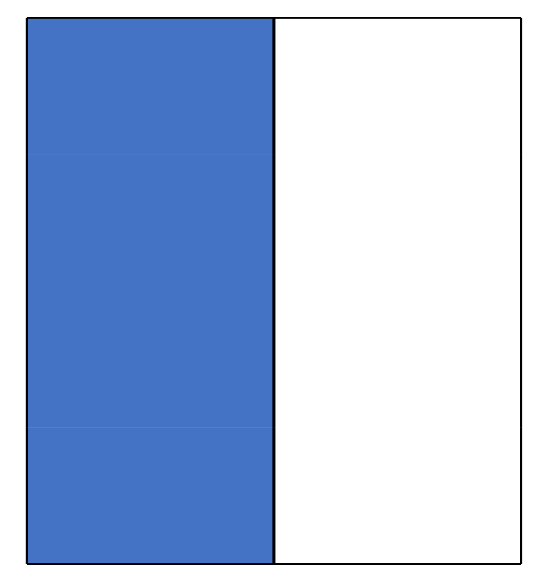
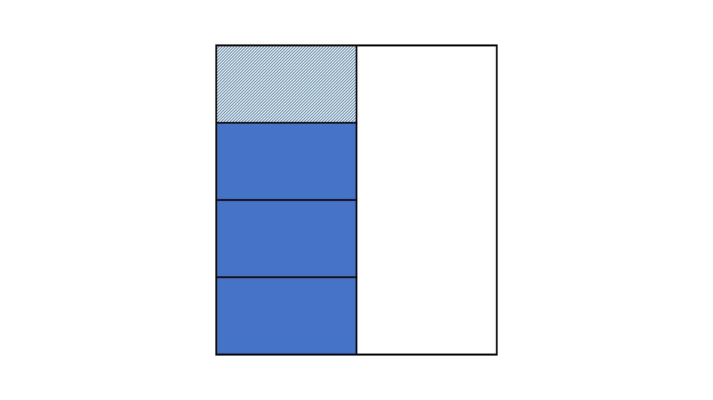
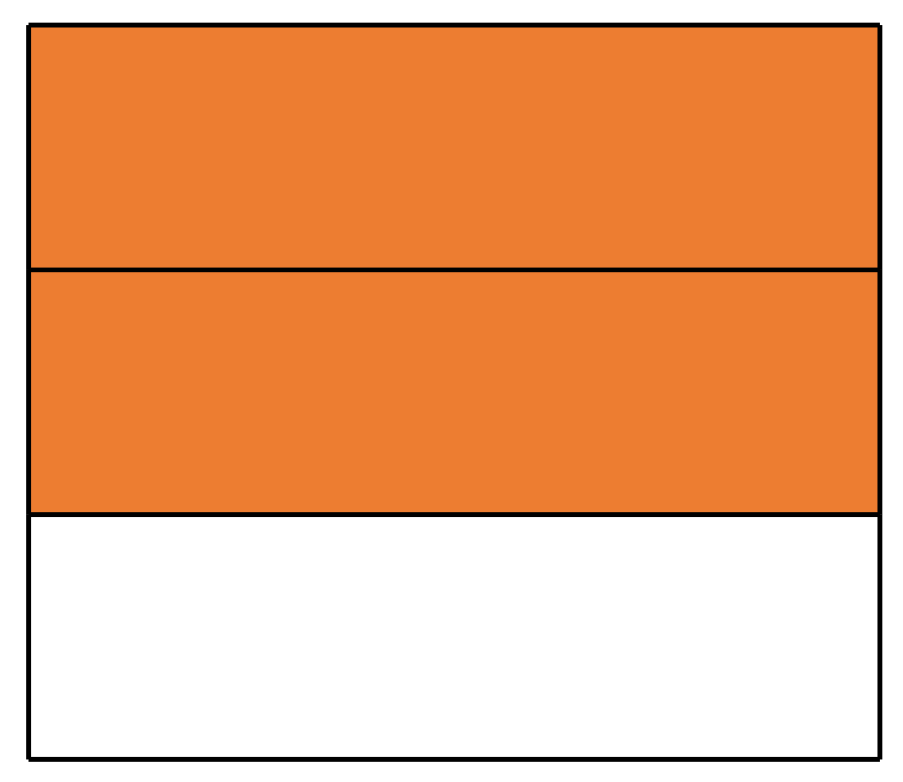
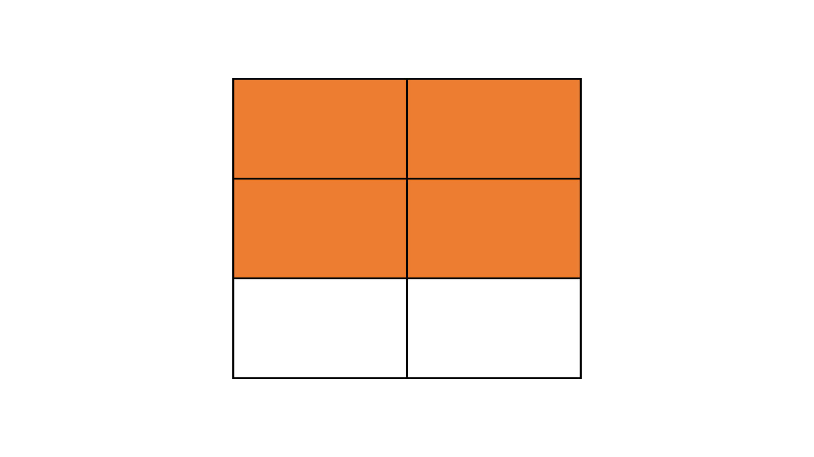

Memuat...
Akses Siswa
Berapa bagian gambar yang berwarna biru di bawah ini?

=Pecahan \(\frac{1}{2}\) bagian yang berwarna biru tersebut akan dibagi 4.

Maka, \(\frac{1}{2} : 4 = \frac{1}{8} \)
Atau dalam operasi perkalian:
\(\frac{1}{2} \times \frac{1}{4} = \frac{1 \times 1}{2 \times 4} = \frac{1}{8} \)
Berapa bagian gambar yang berwarna oranye di bawah ini?

=Pecahan \(\frac{2}{3}\) bagian yang berwarna oranye tersebut akan dibagi 2.

Maka, \(\frac{2}{3} : 2 = \frac{2}{6} \)
Atau dalam operasi perkalian:
\(\frac{2}{3} \times \frac{1}{2} = \frac{2 \times 1}{3 \times 2} = \frac{2}{6} \)